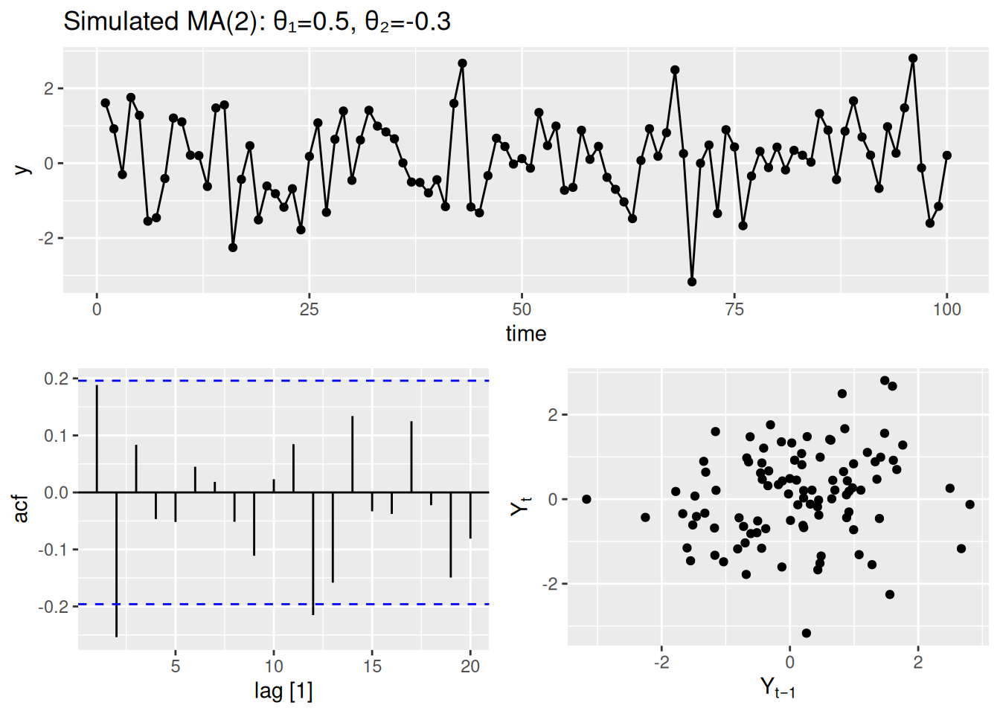
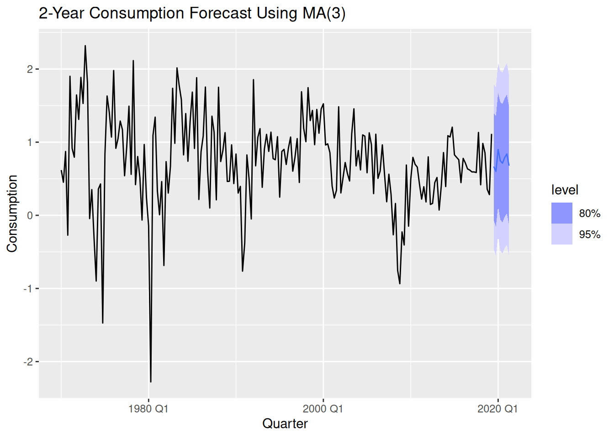
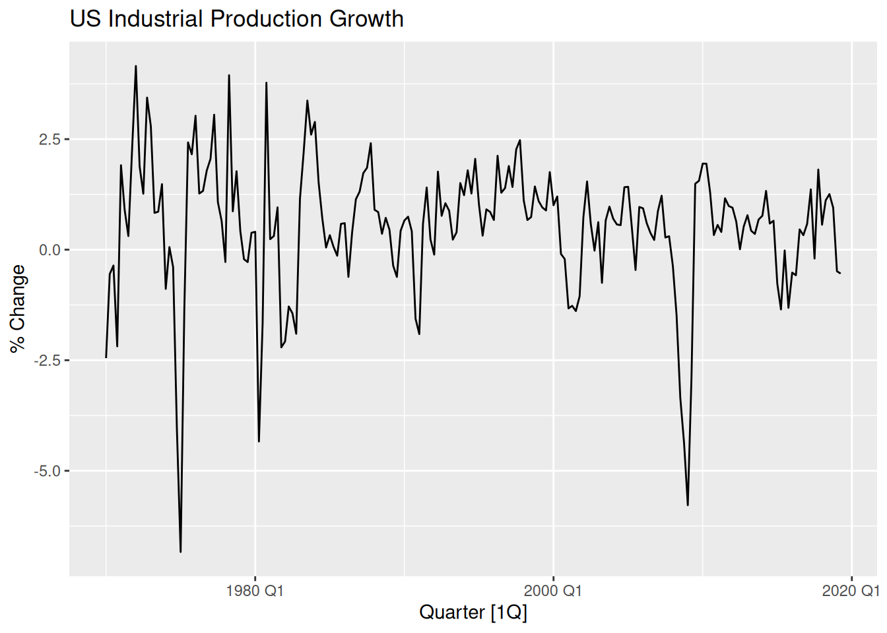

# Time Series Essentials, install if needed!
library(feasts) # Feature extraction & decomposition
library(fable) # Forecasting models (ARIMA, ETS, etc.)
library(fpp3) # Tidy time series dataseta
library(astsa) # Applied statistical TS methods from textbook
library(tseries) # Unit root tests & TS diagnostics
library(tsibbledata) # Curated TS datasets
library(quantmod) # Financial data retrieval
library(tidyquant) # Financial analysis in tidyverse
library(purrr) # Functional programming for TS pipelines
library(readr) # Efficient data importActivity22
Theoretical Foundations of MA Processes
Time Series Nature & Invertibility
Definition:
MA(\(q\)) model:
\(Y_t = \epsilon_t + \theta_1 \epsilon_{t-1} + \cdots + \theta_q \epsilon_{t-q}\)
where \(\epsilon_t \sim WN(0,\sigma^2)\)
Key Properties:
- Models shock persistence through lagged errors
- ACF cuts off after lag \(q\) (distinct signature)
- PACF tails off gradually
- Requires invertibility (roots of \(1 + \theta_1 z + \cdots + \theta_q z^q = 0\) lie outside unit circle)
Simulating & Diagnosing MA Processes
Simulated MA(2) Process
library(fable)
set.seed(123)
ma_data <- tibble(
time = 1:100,
y = arima.sim(model = list(ma = c(0.5, -0.3)), n = 100) # θ₁=0.5, θ₂=-0.3
) %>% as_tsibble(index = time)
ma_data %>%
gg_tsdisplay(y, plot_type = "scatter") + # Observe ACF cutoff at lag 2
labs(title = "Simulated MA(2): θ₁=0.5, θ₂=-0.3")
Model Estimation & Diagnostics
fit_ma <- ma_data %>%
model(ARIMA(y ~ pdq(0,0,2))) # Explicit MA(2) specification
report(fit_ma) # Check θ estimates vs true values (0.5, -0.3)Series: y
Model: ARIMA(0,0,2)
Coefficients:
ma1 ma2
0.5477 -0.3881
s.e. 0.0911 0.0908
sigma^2 estimated as 0.8128: log likelihood=-131.49
AIC=268.98 AICc=269.23 BIC=276.8fit_ma %>%
residuals() %>%
gg_tsdisplay(plot_type = "scatter") +
labs(title = "MA(2) Residual Diagnostics")
Real-World Case Study: US Consumption
Lab Activity A: Modeling Consumption with MA
1. Data Preparation
2. Exploratory Analysis
consumption_ts %>%
autoplot(Consumption) +
labs(title = "US Consumption Growth Rate", y = "% Change")
3. MA Order Identification
consumption_ts %>%
gg_tsdisplay(Consumption, plot_type = "partial", lag_max = 8) +
labs(title = "ACF Shows Sharp Cutoff at Lag 3 → MA(3) Candidate")
4. Model Fitting
ma_fit <- consumption_ts %>%
model(
MA3 = ARIMA(Consumption ~ pdq(0,0,3)),
Auto = ARIMA(Consumption) # Auto-detected MA/SARIMA
)
glance(ma_fit) %>% arrange(AICc) # Compare models# A tibble: 2 × 8
.model sigma2 log_lik AIC AICc BIC ar_roots ma_roots
<chr> <dbl> <dbl> <dbl> <dbl> <dbl> <list> <list>
1 MA3 0.328 -168. 350. 351. 373. <cpl [8]> <cpl [3]>
2 Auto 0.332 -169. 353. 354. 379. <cpl [5]> <cpl [7]>Series: Consumption
Model: ARIMA(0,0,3)(2,0,0)[4] w/ mean
Coefficients:
ma1 ma2 ma3 sar1 sar2 constant
0.2174 0.2242 0.3172 0.1222 -0.1704 0.7768
s.e. 0.0706 0.0718 0.0656 0.0740 0.0728 0.0705
sigma^2 estimated as 0.3284: log likelihood=-167.96
AIC=349.93 AICc=350.52 BIC=372.955. Residual Diagnostics
ma_fit %>%
select(MA3) %>%
residuals() %>%
gg_tsdisplay(.resid, plot_type = "partial") +
labs(title = "MA(3) Residuals: No Significant Autocorrelation")
6. Forecasting
ma_fit %>%
select(MA3) %>%
forecast(h = 8) %>%
autoplot(consumption_ts) +
labs(title = "2-Year Consumption Forecast Using MA(3)")
Lab Activity B: Modeling US Production
1. Data Preparation
production_ts <- us_change %>%
select(Quarter, Production) %>%
as_tsibble(index = Quarter)2. Visualize Series
production_ts %>%
autoplot(Production) +
labs(title = "US Industrial Production Growth", y = "% Change")
3. MA Order Selection
Determine appropriate MA order through ACF:
4. Model Comparison
Fit competing specifications and evaluate:
5. Policy-Relevant Forecasting
Using the best model, generate forecasts up-to 10 time points into the future and interpret economic meaning: